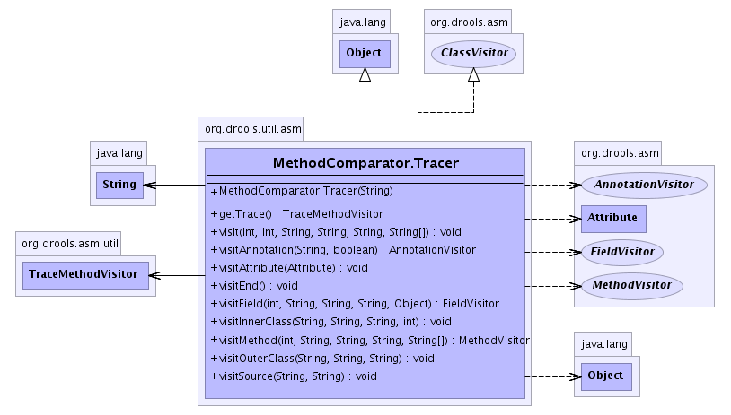

org.drools.util.asm
Class MethodComparator.Tracer
java.lang.Object
 org.drools.util.asm.MethodComparator.Tracer
org.drools.util.asm.MethodComparator.Tracer
- All Implemented Interfaces:
- org.drools.asm.ClassVisitor
- Enclosing class:
- MethodComparator
public static class MethodComparator.Tracer
- extends java.lang.Object
- implements org.drools.asm.ClassVisitor
-
- 
|
Method Summary |
org.drools.asm.util.TraceMethodVisitor |
getTrace()
|
void |
visit(int version,
int access,
java.lang.String name,
java.lang.String signature,
java.lang.String superName,
java.lang.String[] interfaces)
|
org.drools.asm.AnnotationVisitor |
visitAnnotation(java.lang.String desc,
boolean visible)
|
void |
visitAttribute(org.drools.asm.Attribute attr)
|
void |
visitEnd()
|
org.drools.asm.FieldVisitor |
visitField(int access,
java.lang.String name,
java.lang.String desc,
java.lang.String signature,
java.lang.Object value)
|
void |
visitInnerClass(java.lang.String name,
java.lang.String outerName,
java.lang.String innerName,
int access)
|
org.drools.asm.MethodVisitor |
visitMethod(int access,
java.lang.String name,
java.lang.String desc,
java.lang.String signature,
java.lang.String[] exceptions)
|
void |
visitOuterClass(java.lang.String owner,
java.lang.String name,
java.lang.String desc)
|
void |
visitSource(java.lang.String source,
java.lang.String debug)
|
| Methods inherited from class java.lang.Object |
clone, equals, finalize, getClass, hashCode, notify, notifyAll, toString, wait, wait, wait |
MethodComparator.Tracer
public MethodComparator.Tracer(java.lang.String methodName)
visit
public void visit(int version,
int access,
java.lang.String name,
java.lang.String signature,
java.lang.String superName,
java.lang.String[] interfaces)
- Specified by:
visit in interface org.drools.asm.ClassVisitor
visitAnnotation
public org.drools.asm.AnnotationVisitor visitAnnotation(java.lang.String desc,
boolean visible)
- Specified by:
visitAnnotation in interface org.drools.asm.ClassVisitor
visitAttribute
public void visitAttribute(org.drools.asm.Attribute attr)
- Specified by:
visitAttribute in interface org.drools.asm.ClassVisitor
visitEnd
public void visitEnd()
- Specified by:
visitEnd in interface org.drools.asm.ClassVisitor
visitField
public org.drools.asm.FieldVisitor visitField(int access,
java.lang.String name,
java.lang.String desc,
java.lang.String signature,
java.lang.Object value)
- Specified by:
visitField in interface org.drools.asm.ClassVisitor
visitInnerClass
public void visitInnerClass(java.lang.String name,
java.lang.String outerName,
java.lang.String innerName,
int access)
- Specified by:
visitInnerClass in interface org.drools.asm.ClassVisitor
visitMethod
public org.drools.asm.MethodVisitor visitMethod(int access,
java.lang.String name,
java.lang.String desc,
java.lang.String signature,
java.lang.String[] exceptions)
- Specified by:
visitMethod in interface org.drools.asm.ClassVisitor
visitOuterClass
public void visitOuterClass(java.lang.String owner,
java.lang.String name,
java.lang.String desc)
- Specified by:
visitOuterClass in interface org.drools.asm.ClassVisitor
visitSource
public void visitSource(java.lang.String source,
java.lang.String debug)
- Specified by:
visitSource in interface org.drools.asm.ClassVisitor
getTrace
public org.drools.asm.util.TraceMethodVisitor getTrace()